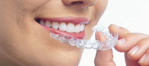
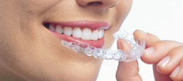

Especialidades
Brindamos atención especializada en todas las áreas de la odontología, en niños, adolescentes, adultos y adultos mayores. Abarca desde controles periódicos en salud hasta tratamientos de alta complejidad.
Estética dental
La odontología estética busca mejorar la forma, la proporción, el color de los dientes y el contorno de la encía, imitando tanto como sea posible la naturaleza y teniendo bien presente los requerimientos estéticos del paciente.
Una entrevista preliminar es clave para entender las ambiciones estéticas de cada persona. Las técnicas de estética dental en general, implican un cuidadoso estudio del defecto estético, y la definición de una ruta a seguir para resolverlo.
Hay muchas técnicas útiles para obtener el resultado de la mejora estética: carillas de porcelana; coronas de cerámica sin sustrato metálico; restauraciones de resina con la técnica directa y blanqueamientos dentales.
Blanqueamiento dental
El blanqueamiento dental es un tratamiento estético de gran eficacia en los dientes naturales. Nuestra clínica cuenta con dos tipos de técnicas:
- Domiciliaria, para la cual se confeccionan placas para el uso del blanqueamiento en el hogar.
- De consultorio, realizada con productos de uso profesional, que logran resultados estéticamente más evidentes en menos tiempo. Contamos para este tratamiento con una luz que potencia el gel blanqueador y una luz infrarroja para evitar la sensibilidad.
Implantes dentales
La implantología oral es la reposición de las piezas dentales perdidas mediante estructuras de titanio, denominados implantes dentales.
Los implantes dentales se pueden utilizar en el tratamiento de la mayoría de los casos de desdentados y con frecuencia representan la primera elección en comparación con otras posibilidades de rehabilitación.
No basta con colocar un implante para hablar de la implantología. El objetivo de cualquier proceso rehabilitador, de hecho, es alcanzar la excelencia estética y funcional y la implantología no es la excepción, por lo tanto se debe considerar de manera preliminar el resultado estético de la rehabilitación final.
Nuestra clínica cuenta con especialistas de primer nivel y con toda la tecnología necesaria para brindarle el mejor tratamiento con implantes con garantía internacional.
Rehabilitación de alta complejidad
Somos un equipo capaz de resolver complejas disfunciones masticatorias y deficiencias estéticas, con tecnología de vanguardia y profesionales de alto nivel.
Odontopediatría
La Odontopediatría se ocupa de la atención del niño desde que se encuentra en el vientre materno. La madre embarazada debe recibir información y tratamiento adecuado para favorecer el correcto crecimiento y desarrollo de ese bebé y también debe saber qué hacer cuando el niño nace. Los controles periódicos en salud son fundamentales para evitar enfermedades bucales, para diagnosticar e intervenir oportunamente ante la aparición de cualquier alteración o enfermedad.
En nuestra clínica los niños y adolescentes reciben una atención especializada, integral y actualizada, que permite el seguimiento de su salud y el tratamiento oportuno.
Ortodoncia convencional y sin brackets
La ortodoncia permite recuperar la estética y función adecuadas en adolescentes y adultos de cualquier edad. Algunas veces se realiza para mejorar los resultados de rehabilitaciones dentales. En muchos casos también contribuye en mejorar la autoestima de los pacientes con problemas dentarios que los afectan anímica o psicológicamente.
Contamos con la posibilidad de realizar tratamiento ortodoncicos con bracket metálics o brackets cerámicos estéticos.
Actualmente también contamos con la posibilidad de realizar ortodoncia sin brackets. Este tratamiento consiste en placas transparentes diseñadas digitalmente en forma individual para cada paciente. Son invisibles y tienen como ventajas la estética perfecta, el gran confort y la facilidad de la higiene. Además el paciente y el profesional pueden visualizar el resultado del tratamiento, en forma virtual, antes de comezarlo.

 

Ortopedia
Se realiza en niños, armoniza el crecimiento de los maxilares y la posición dentaria. También actúa en la reeducación de funciones como la respiración, deglución, masticación y posición lingual, que a su vez, favorece la correcta forma de los huesos maxilares y faciales.
Esta corrección de forma y función maxilo-facial influye positivamente en la postura corporal que está alterada cuando existen problemas de mordida y de función.
Odontogeriatría
La odontología geriátrica es la rama de la odontología que se ocupa de la atención de las personas mayores.
Es importante conocer que el adulto mayor suele tener una o más enfermedades crónicas que implican el deterioro físico o mental, con problemas psicosociales asociados y/o derivados de tratamientos medicamentosos, los cuales van a requerir un manejo especial a nivel médico y odontológico.
Para el adulto mayor es de vital importancia mantenerse activo socialmente. La salud bucal le permite al adulto mayor hablar correctamente, comer, beber, cantar y sonreír. Por esto, la odontogeriatría contribuye a lograr una buena salud general mejorando la autoestima.
Contamos con odontólogos preparados para tratar con humanidad y calidad todas las problemáticas odontológicas de los adultos mayores.
Prótesis
El propósito principal de la prótesis dental es la recuperación de una función masticatoria incompleta o insuficiente por falta de elementos dentales en una o más sectores de la boca.
Al mismo tiempo, la prótesis dental es capaz de permitir la reconstrucción de elementos dentales gravemente alterada o mejorar la forma y la estética de los dientes.
Las prótesis dentales pueden ser fijas o removibles. Las fijas pueden anclarse sobre dientes naturales o sobre implantes y no pueden ser removidas por el paciente. Las prótesis removibles, en cambio, pueden apoyarse sobre las mucosas o pueden apoyarse y retenerse sobre dientes naturales y/o implantes dentales (sobredentaduras) logrando así una mejor retención y más confort del paciente.
Nuestros profesionales son especialistas en la temática y están capacitados para resolver con éxito desde los casos más sencillos hasta los más complejos.
Cirugía general y pediátrica
En la clínica se realizan una amplia variedad de cirugías preparatorias para recibir tratamientos rehabilitadores estéticos y funcionales, cirugías de terceros molares y cirugías para ortodoncia.
Además realizamos cirugía menor ambulatoria en bebes, niños y adolescentes con la mejor calidad y que constituye una experiencia muy positiva para el niño y su familia, evitando la anestesia general, sus riesgos y alteración de la vida familiar.
Endodoncia y periodoncia
La endodoncia se ocupa del diagnóstico y la terapia de eliminación de la pulpa dental, es decir, el tejido presente en la raíz del diente.
Un tratamiento de endodoncia (o tratamiento de conducto) tiene el objetivo de eliminar, con procedimientos adecuados, la pulpa dental infectada, y luego limpiar y desinfectar el conducto que la aloja, terminando con el sellado hermético final necesario para prevenir una reinfección.
En nuestra clínica realizamos tratamientos de endodoncia de forma convencional, manualmente con limas, así como también tratamientos de forma mecanizada, los cuales son de última tecnología y permiten simplificar los tiempos de trabajos, mejorando así el confort del paciente.
La periodoncia es una especialidad odontológica que estudia la prevención, diagnóstico y tratamiento de las enfermedades y condiciones que afectan los tejidos que dan soporte a los dientes e implantes para el mantenimiento de la salud, función y estética
Los cuadros periodontales van desde la inflamación de las encías (gingivitis) hasta la destrucción del soporte dentario (periodontitis) con una vasta gama de tratamientos.
Laserterapia
El láser es un haz de luz concentrado que, transmitido a través de una fibra óptica, impacta de forma suave sobre la piel, la mucosa bucal o el diente.
Laser terapéutico
La terapia laser tiene un efecto biomodulador o balanceador y normalizador de las funciones celulares. Produce alivio del dolor, estimula la reparación de los tejidos, reduce el edema e inflamación, previene y trata infecciones, entre otras muchas aplicaciones posibles. El láser puede utilizarse también para terapias Anti Aging y terapia Sistémica que consisten en la aplicación continua y directa de laser sobre la piel de la región de la arteria radial del brazo, produciendo un efecto fotoquímico celular que actúa en todo el organismo.
Estos tratamientos tienen indicación en procesos inflamatorios agudos y crónicos, combaten los radicales libres con un efecto de rejuvenecimiento celular y un aumento de las defensas del cuerpo.
Conservación de células madres
Las células madre son las que dan origen a todos los órganos y tejidos del organismo. Estas células multipotenciales se encuentran abundantemente en los 20 dientes de leche. Tienen la potencialidad de regenerar músculo, hueso, piel, cartílago, hígado, dientes, tejido nervioso, adiposo, cardíaco y otros. Nuestra clínica brinda este servicio avalada por Bio Eden, que nos provee de los Kits necesarios para almacenar los dientes extraídos en forma adecuada para enviar a Austin, Texas donde se aíslan la células madre viables y se crio-preservan (conservación en frío) para su uso futuro.